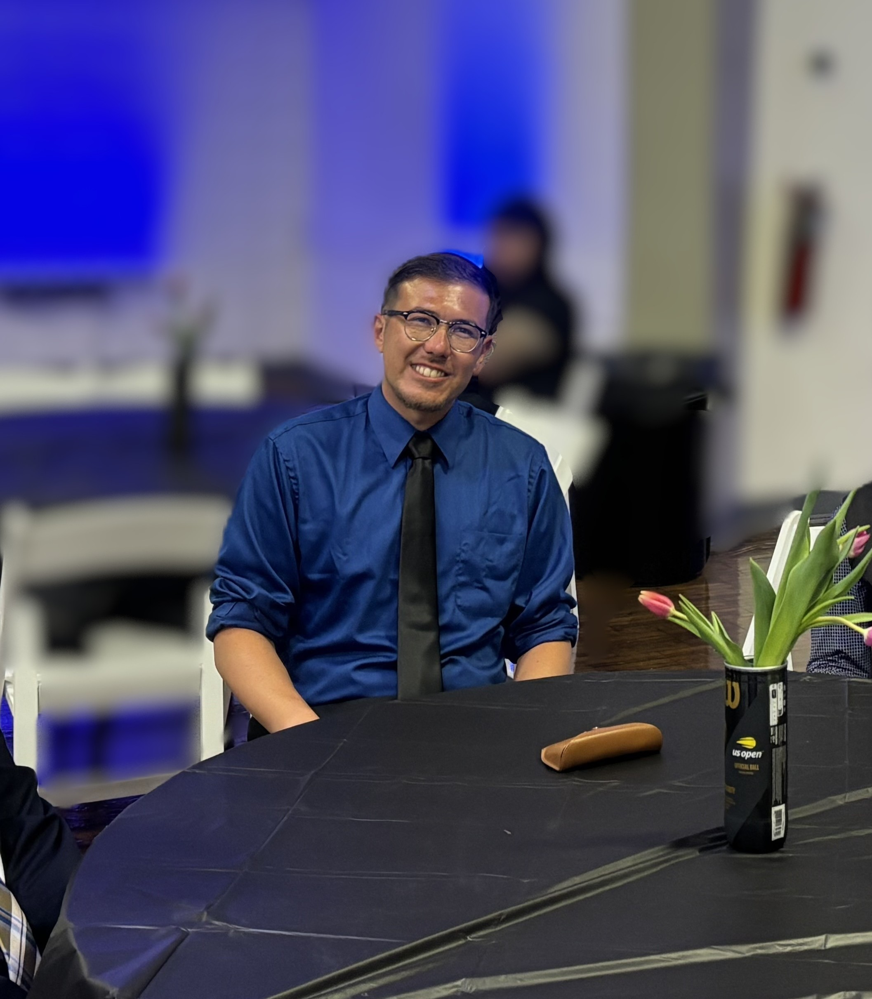

Leadership • Sport • Education • Kinesiology
Jeffrey Jaymot
Coach at Heart. Builder by Nature. Student for Life.
I grew up in sports learning that work ethic matters, and I’ve carried that lesson into everything I do. Through the highs and lows, I’ve kept moving forward, kept learning, and kept building. That is still what I enjoy most—building programs, developing people, and creating opportunities that can become something bigger than where they started.

Professional Snapshot
A career spanning program development, athletic leadership, education, research, coaching, and community-based physical activity.
Program Building
Experience developing athletic, educational, recreational, and community programs from concept through implementation and growth.
Athletic Leadership
Experience in athletic administration, event operations, coaching support, facilities, scheduling, and student-athlete programming.
Coaching & Education
Extensive experience developing athletes and students through coaching, instruction, curriculum, mentorship, and long-term development.
Research
Doctoral research focused on physical activity access, environmental conditions, historical inequities, and community experience.
Current Roles
Current professional and academic work spanning doctoral research, community recreation, coaching, and sports programming.
Research
Doctoral Researcher
EdD in Kinesiology, ABD • University of North Carolina Greensboro
Conducting mixed-methods doctoral research examining physical activity access, community environments, historical inequities, and lived experience.
Coaching & Instruction
Tennis Instructor
Community Recreation & Player Development
Providing youth and adult tennis instruction across recreational and competitive settings with an emphasis on skill development, match play, and long-term athlete development.
Sports Programming
Junior Team Tennis Coordinator
Community-Based Sport & USTA Programming
Building and coordinating USTA Junior Team Tennis programming with responsibility for program development, participant engagement, coaching coordination, competition, and seasonal operations.
Career Highlights
Selected outcomes from athletic leadership, collegiate coaching, and community program development.
Richmond High School Athletics
During my tenure at Richmond High School, I contributed to one of the most successful competitive periods in the school's recent athletic history through leadership in varsity tennis, basketball, and athletic administration. The results below reflect both program-wide outcomes during that period and accomplishments directly earned through my head coaching roles.
Selected Recognition & Program Development
- NCS Girls' Tennis Honor Coach Award — 2022 Recognized by the North Coast Section for leadership and contributions to girls' tennis.
- USTA Hispanic Outreach Grant — 2017 Secured grant support to expand tennis participation and program-development opportunities.
Diablo Valley College Athletics
As an assistant men's tennis coach at Diablo Valley College, I contributed to a highly ranked California community college program through player development, instruction, recruitment, competition preparation, and program operations.
Collegiate Coaching Recognition
- ITA Junior College Assistant Coach of the Year — Region I, California — 2015 Recognized by the Intercollegiate Tennis Association for contributions to the Diablo Valley College men's tennis program.
Community Programs
My current work extends beyond coaching into the development and growth of community-based sport and physical activity programs. These efforts focus on expanding opportunities for youth and adults through recreation, instruction, competition, and sustainable program development.
Graduate Education
Interdisciplinary graduate preparation spanning kinesiology, education, technology, and business.
In Progress • ABD • Expected 2027
In Progress • Expected 2026
Completed 2020
Completed 2015